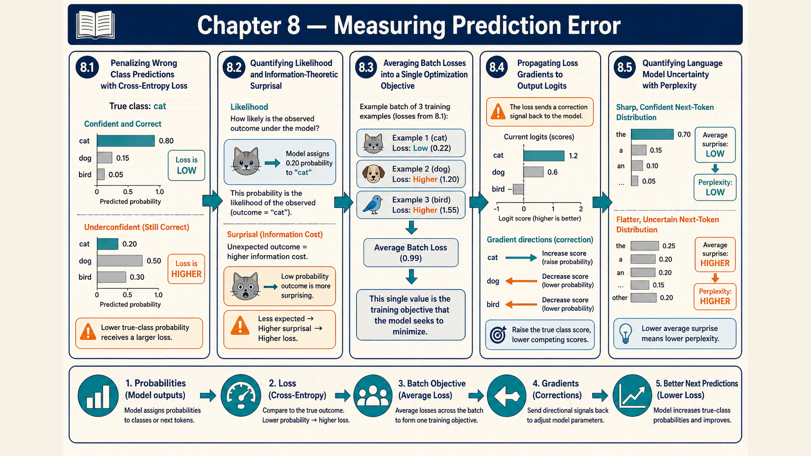
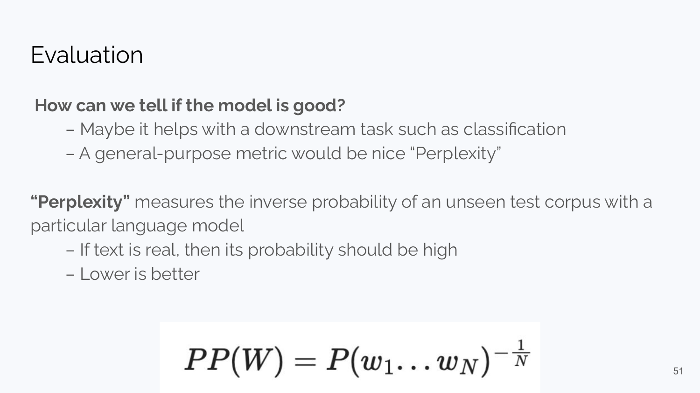
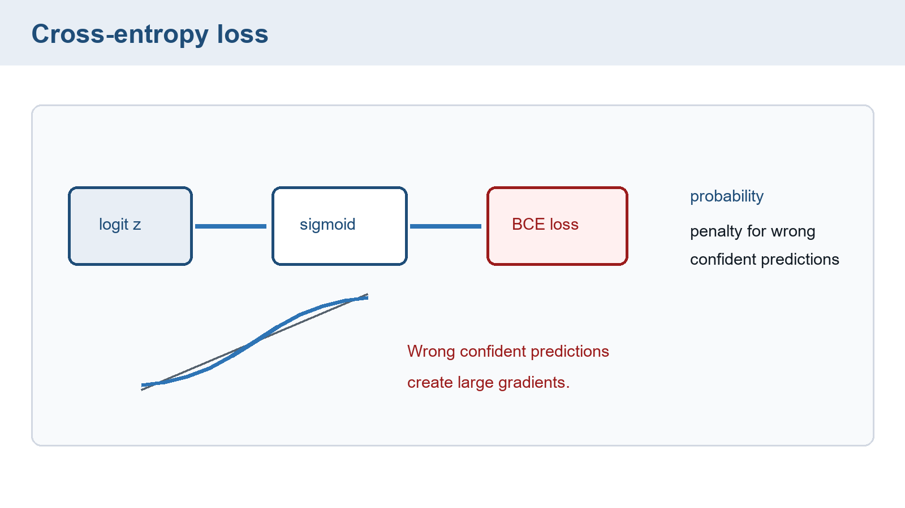

8 Cross-Entropy & Perplexity: Measuring Prediction Error and Uncertainty
Training needs a scalar measure of how well predicted probabilities matched observed targets. A useful loss makes confident incorrect predictions more costly than uncertain ones.
Training needs one number that says how well a probability model matched its targets. Cross-entropy and negative log likelihood provide that number; perplexity summarizes average next-token uncertainty.
In code, torch.nn.BCEWithLogitsLoss and CrossEntropyLoss combine logits with stable log operations; torch.nn.functional.cross_entropy is the functional form used in compact examples.
Chapter 8 develops one required stage of the guide’s computation.

The numbered panels correspond to the chapter sections and show how each local result supplies the next operation.
8.1 Penalizing Wrong Class Predictions with Cross-Entropy Loss
Cross-entropy connects probabilistic predictions to gradient descent. It gives a large penalty when the model assigns low probability to the correct label.
- Log-loss: The binary cross-entropy loss used in logistic regression.
- One-hot target: A vector with probability 1 on the correct class and 0 elsewhere.
- Calibration: The relationship between predicted probabilities and observed frequencies.
The logistic regression notebook uses this model to make autograd concrete: compute scores, convert to probabilities, compute loss, call backward, and update parameters.
The loss is smooth almost everywhere, so gradients tell the optimizer how each weight should move. The model is simple, but the training loop is the same skeleton used by larger neural networks.
Origin note: Cross-entropy comes from information theory and can be read as the penalty for assigning inefficient code length to the observed outcome. In machine learning it is also negative log likelihood for a probabilistic classifier.
The one-hot target explains why multiclass cross-entropy can look like it only reads the true class. The full expression sums over all classes, but every non-target indicator is zero.
BCE penalizes the predicted probability assigned away from the observed binary label.
Binary cross-entropy:
\[ L_{\mathrm{BCE}}=-y\log p-(1-y)\log(1-p) \tag{8.1}\]
where y is binary target, 0 or 1; p is predicted probability of \(y = 1\).
Binary cross-entropy is the negative log of the Bernoulli probability assigned to the observed label.
confident wrong predictions receive large loss and therefore dominate the update.
For one-hot labels, only the true class term remains.
Multiclass cross-entropy:
\[ L_{\mathrm{CE}}=-\sum_i y_i\log p_i \tag{8.2}\]
where \(y_{i}\) is one-hot target indicator; \(p_{i}\) is predicted class probability.
For a categorical likelihood, the one-hot target keeps only the term for the observed class.
the loss cares directly about probability assigned to the observed class.
NLL is the probability-model view of the same penalty.
Negative log likelihood:
\[ \mathrm{NLL}=-\log P_\theta(y\mid x) \tag{8.3}\]
For a one-hot target, cross-entropy reduces to the negative log probability of the observed class.
One-hot CE collapse:
\[ H(y,p)=-\sum_i y_i\log p_i=-\log p_y \tag{8.4}\]
where \(y_{i}\) is one-hot target indicator; \(p_{i}\) is predicted class probability; \(p_{y}\) is predicted probability of the observed class.
Only the observed class has target indicator 1; all other terms are multiplied by 0.
The name cross-entropy still refers to the full distribution comparison, even though one-hot labels collapse the arithmetic.
Example: Training Loss for Class Predictions
Binary cross-entropy:
For a positive label, probability 0.8 gives loss about 0.223, while probability 0.1 gives loss about 2.303.
Multiclass cross-entropy:
If the true class receives probability 0.7, the cross-entropy loss is about 0.357.
Negative log likelihood:
If the model assigns probability 0.25 to the observed label, NLL=-\(\log(0.25)=1.386\).
One-hot CE collapse:
If the true class probability is 0.25, the loss is -\(\log(0.25)=1.386\).
Code example: A minimal binary logistic regression step.
import torch.nn as nn
import torch
X = torch.randn(32, 4)
y = torch.randint(0, 2, (32, 1)).float()
w = torch.randn(4, 1, requires_grad=True)
b = torch.zeros(1, requires_grad=True)
logits = X @ w + b
loss = torch.nn.functional.binary_cross_entropy_with_logits(logits, y)
loss.backward()
with torch.no_grad():
w -= 0.1 * w.grad
b -= 0.1 * b.grad
w.grad.zero_(); b.grad.zero_()After backward, w.grad has dimensions [4, 1] and b.grad has dimensions [1]; the no-grad block applies one explicit stochastic-gradient step.
Random data makes the numeric loss vary between runs. The example demonstrates the computation and gradient flow, not classifier quality.
Cross-entropy lowers the loss when probability moves toward the observed target and raises it when probability moves away. Likelihood gives the same relationship a probabilistic interpretation.
8.2 Quantifying Likelihood and Information-Theoretic Surprisal
Cross-entropy is easier to understand when it is separated into uncertainty in a target distribution and disagreement between two distributions. These quantities explain why likelihood, cross-entropy, and KL divergence use logarithms.
- Entropy: The expected negative log probability assigned by a distribution to outcomes drawn from itself.
- Cross-entropy: The expected negative log probability assigned by a model distribution to outcomes from a target distribution.
- Kullback-Leibler (KL) divergence: The additional average log-loss incurred when q is used to represent outcomes generated by p instead of p itself.
- Nat: One unit of information measured with natural logarithms, whose base is e. One nat is about 1.443 bits.
A confident model is rewarded when it assigns high probability to the observed outcome. The logarithm makes a very small assigned probability costly and turns products of conditional probabilities into sums of token losses.
Kullback-Leibler, usually shortened to KL, compares two probability distributions. It asks how much extra average surprise results when q is used to encode outcomes that actually follow p. KL divergence is non-negative and equals zero only when the two distributions agree on all outcomes; it is not a symmetric distance, so swapping p and q generally changes the result.
Natural-log loss values are measured in nats rather than bits. A nat is an information unit based on logarithms with base e; dividing a value in nats by log(2) converts it to bits.
Entropy measures the uncertainty of the target distribution p.
Entropy:
\[ H(p)=-\sum_i p_i\log p_i \tag{8.5}\]
where \(p_{i}\) is target probability of outcome i; i is outcome index.
The expectation of -log \(p_{i}\) under p is the sum of each surprisal weighted by the probability of observing that outcome.
A distribution with mass spread across many outcomes has higher entropy than one concentrated on a single outcome.
KL divergence measures the extra coding cost of using q when p generates the outcomes.
KL divergence:
\[ \operatorname{KL}(p\mathbin\Vert q)=\sum_i p_i\log\left(\frac{p_i}{q_i}\right) \tag{8.6}\]
where \(p_{i}\) is target probability; \(q_{i}\) is model probability; i is outcome index.
Cross-entropy exceeds entropy by the expected log ratio between the target probability and the model probability. That difference is the KL divergence shown above.
The ratio compares the probability assigned by q with the probability assigned by p for each outcome.
Example: Entropy
For \(p=(0.5,0.5)\), the entropy is \(H(p)=-0.5\log(0.5)-0.5\log(0.5)\approx0.693\) nats.
Example: KL divergence
For \(p=(0.5,0.5)\) and \(q=(0.75,0.25)\), \(\operatorname{KL}(p\mathbin{\|}q)=0.5\log\frac{0.5}{0.75}+0.5\log\frac{0.5}{0.25}\approx0.144\) nats.
Negative log likelihood converts a probability assigned to the observed event into a loss. A batch objective averages that loss across many examples or token positions.
8.3 Averaging Batch Losses into a Single Optimization Objective
A loss function converts an error into a scalar number that optimization can reduce. The scalar is essential: gradient-based training needs one differentiable objective that can be traced back to every parameter.
- Loss: A scalar penalty assigned to a prediction-label pair.
- Empirical risk: The average loss over the training examples.
- Negative log likelihood: The negative log probability of the observed target under the model.
For binary classification, the logistic loss rewards high probability on the correct class and strongly penalizes confident wrong predictions. For language modeling, cross-entropy is computed over a vocabulary at every predicted token position.
The loss is not the same thing as the task metric. Accuracy, F1, BLEU, and human preference scores may be what users care about, while cross-entropy is often the differentiable proxy used for training.
A model usually produces one loss value per example or token position. Reduction converts that array to the scalar required by reverse-mode differentiation, using a sum, a mean, or a masked mean.
The reduction changes gradient scale. Summing makes the gradient grow with the number of contributing positions; averaging keeps it comparable across batch sizes, while a masked mean divides only by valid supervised positions.
Training minimizes an average loss over the observed examples.
Empirical risk:
\[ \widehat{R}(\theta)=\frac{1}{n}\sum_i L(f_\theta(x_i),y_i) \tag{8.7}\]
where n is number of observed training examples; \(x_{i}\), \(y_{i}\) is inputs and targets for example i; \(f_\theta\) is model with trainable parameters θ; L is per-example loss.
The training set supplies one loss per example. Summing those losses and dividing by n gives one scalar objective whose gradient combines the contribution of every example.
empirical risk measures fit to the observed sample; validation and test splits estimate how well that fit transfers beyond it.
Binary cross-entropy is reduced across the examples that contribute to the batch objective.
Binary cross-entropy:
\[ L(y,p)=-y\log(p)-(1-y)\log(1-p) \tag{8.8}\]
where y is binary target, 0 or 1; p is predicted probability of \(y = 1\).
Binary cross-entropy is the negative log of the Bernoulli probability assigned to the observed label.
confident wrong predictions receive large loss and therefore dominate the update.
Token cross-entropy:
\[ L=-\log P_\theta(x_t\mid x_{<t}) \tag{8.9}\]
where \(x_{t}\) is observed target token at position t; θ is model parameters.
The token loss is the negative log probability assigned to the observed next token.
Only supervised, unmasked positions contribute to the reported mean.
Example: Batch Loss Reduction
Empirical risk:
For two losses 0.2 and 0.5, empirical risk is \((0.2+0.5)/2=0.35\).
Binary cross-entropy:
For a positive label, probability 0.8 gives loss about 0.223, while probability 0.1 gives loss about 2.303.
Token cross-entropy:
Assigning probability 0.25 to the observed token gives loss -\(\log(0.25)=1.386\).
Averaging creates one scalar objective for a batch while preserving each example’s contribution. Differentiating that scalar shows how every logit should change.
8.4 Propagating Loss Gradients to Output Logits
The softmax-cross-entropy gradient is the local error signal that turns probability predictions into updates of the logits.
Logit gradient is the derivative of the scalar loss with respect to each unnormalized score.
The simplification is not cosmetic. When softmax is paired with cross-entropy, the derivative at each logit becomes predicted probability minus target indicator. That gives every class a signed correction in the same vector dimensions as the logits.
For the true class, the target entry is 1, so the gradient is negative unless the model already assigns probability 1. Gradient descent therefore raises the true-class logit. For every wrong class, the target entry is 0, so the gradient is positive and the update lowers that logit in proportion to its probability mass.
For a sigmoid output with binary cross-entropy, the logit gradient is again prediction minus target.
BCE gradient:
\[ \frac{dL}{dz}=p-y \tag{8.10}\]
where z is scalar logit; p is sigmoid(z), the predicted probability; y is binary target, 0 or 1.
Differentiating binary cross-entropy through the sigmoid cancels the extra sigmoid factors and leaves prediction minus target at the logit.
logistic regression with BCE updates the logit by the signed prediction error.
Example: BCE gradient
With predicted probability 0.8, the logit gradient is negative for a positive label and positive for a negative label.
Example: Softmax CE gradient
For probabilities (0.7, 0.2, 0.1) with class 0 as the target, the gradient raises class 0 and lowers the other classes.
The logit gradient is the immediate correction signal at the classifier output. Later chapters carry that signal backward through the parameters that produced the logits.
8.5 Quantifying Language Model Uncertainty with Perplexity
Token cross-entropy is the average negative log probability assigned to the observed next token at supervised sequence positions.
- Token loss: The cross-entropy at one predicted token position.
- Loss mask: A binary mask that excludes padding or ignored positions from the average.
- Perplexity: The exponential of average token cross-entropy.
A language model does not produce one loss for the whole sentence directly. It produces logits at many sequence positions, and each supervised position asks whether the model assigned high probability to the token that actually came next.
The loss mask decides which positions count. Padding positions, prompt-only positions, or ignored labels must be excluded from both the numerator and denominator; otherwise the reported loss measures formatting artifacts rather than prediction quality.
Perplexity is the exponential of the average token cross-entropy. It is useful as a within-tokenizer comparison, but it should not be compared across tokenizers without qualification because a token is not the same unit in every vocabulary.
A concrete reading is helpful: average token cross-entropy 2.0 means perplexity exp(2.0), about 7.4. This is an effective branching-factor intuition: the model’s uncertainty is comparable to a uniform choice among about seven options, not a literal count of candidate tokens.
Only unmasked target positions contribute to the average.
Average token CE:
\[ \mathrm{CE}=-\frac{1}{M}\sum_{t\in\mathrm{unmasked}}\log P_\theta(x_t\mid x_{<t}) \tag{8.11}\]
Perplexity is the exponential form of average token negative log likelihood.
Perplexity:
\[ \mathrm{PPL}=\exp(\mathrm{CE}) \tag{8.12}\]
Example: Average token CE
For correct-token probabilities 0.7 and 0.5, \(CE=-(\log 0.7 + \log 0.5)/2=0.525\).
Example: Perplexity
If \(\operatorname{CE}=1.2\), then \(\operatorname{PPL}=\exp(1.2)\approx3.32\).
Perplexity summarizes average next-token surprise on a multiplicative scale. It is an evaluation measure, not the training update itself.
8.6 Visualizing Cross-Entropy Loss and Perplexity Surfaces
Cross-entropy links the probability assigned to a target with the scalar loss used for training.
Language-model loss is easier to interpret when it is connected to perplexity, the exponential form of average negative log likelihood.

Perplexity can be read as an effective branching factor: lower perplexity means the model assigns higher probability to the observed continuation.
The probability view becomes trainable only after a scalar loss assigns a penalty to the predicted probability of the true class.

Cross-entropy is both an evaluation quantity and the scalar endpoint for backpropagation. Confident wrong predictions dominate the update.
Cross-entropy and likelihood turn probabilities into the scalar objective that gradients can reduce.
Evaluation separates optimization on training data from measurement on held-out data.